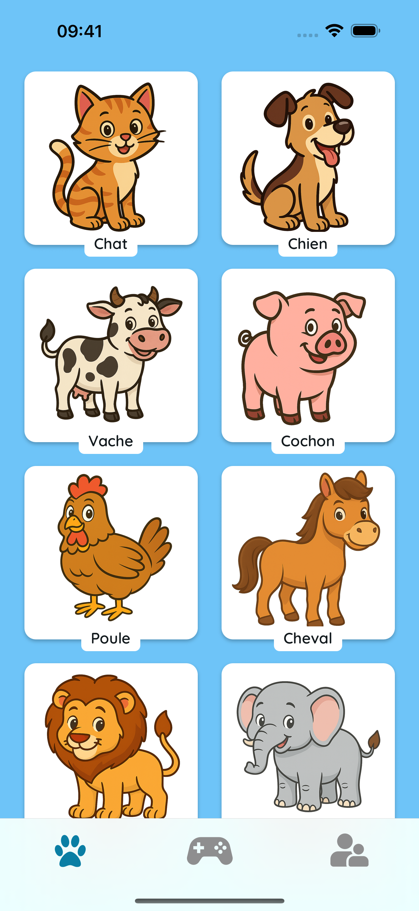
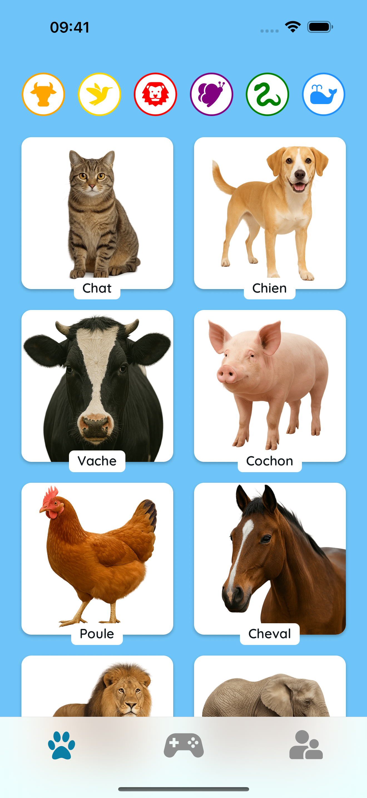
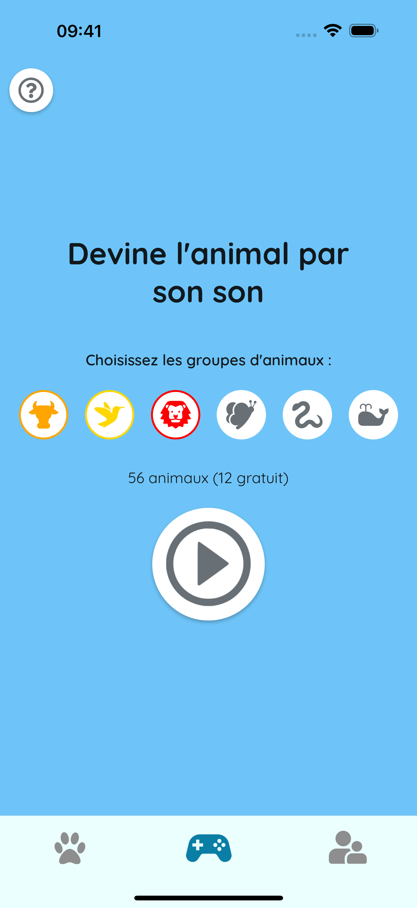
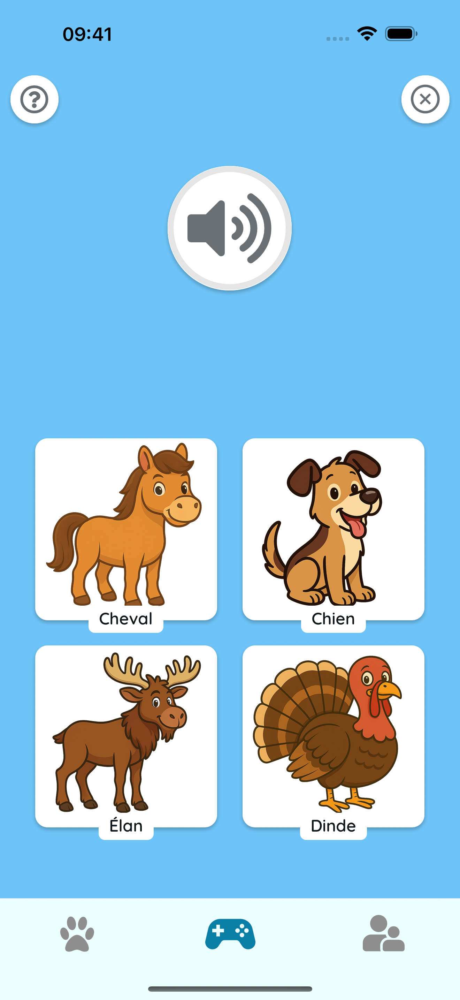

🎵 Apprendre en Écoutant
Touchez les animaux pour entendre de vrais sons. Parfait pour le développement précoce de la parole, la mémoire et des moments familiaux amusants !
 🧠 Jouer et Deviner
Écoutez attentivement et choisissez le bon animal ! Un mode quiz simple aide les enfants à apprendre à reconnaître les sons et à se souvenir facilement des animaux.
 🌍 Sécurisé et Adapté aux Enfants
Pas de publicité. Pas de suivi. Juste des animaux colorés, des sons amicaux et un temps d'apprentissage heureux ensemble.